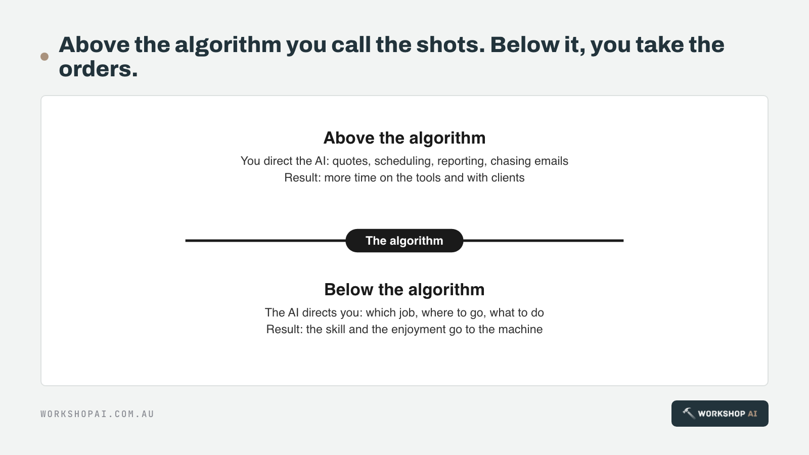
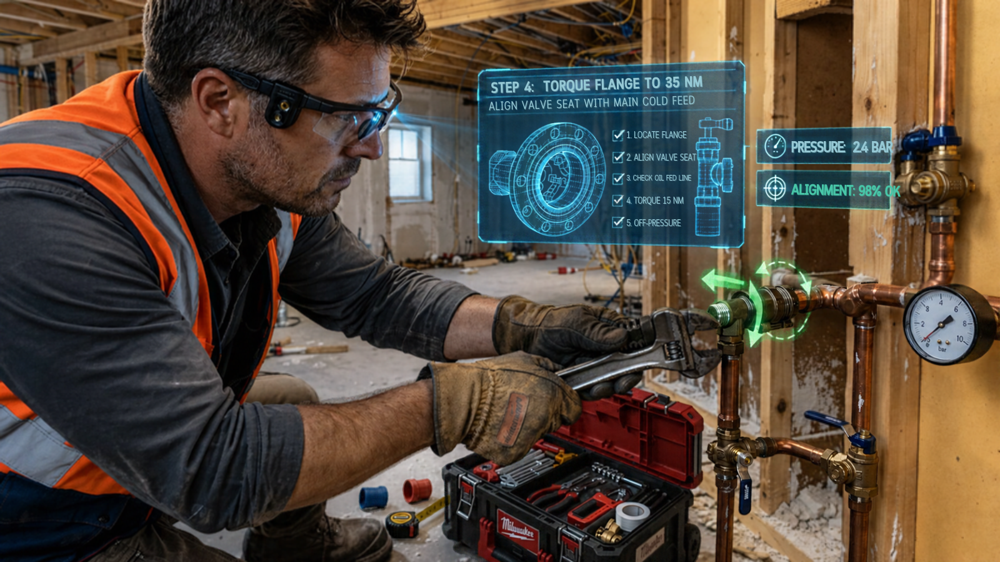

Who benefits from AI?
Have you ever noticed that the people who work close to money, the bankers, financiers and stock traders, are the ones who tend to make lots of money? Being close to the thing you deal with gives you an advantage. When that thing is money, it can be very rewarding.
I think the same is true of technology. The companies and people developing it are often the ones who benefit from it most directly, and AI is a great example. Coding is one of the most developed uses of AI in the economy, and it was software engineers, who code all day, who built it.
I've worked in the software industry for more than 10 years and I've watched this happen. The pace of change is incredible and so are the benefits. And it's only speeding up.
What prompted me to start Workshop AI is that this benefit isn't being spread evenly. Software engineers are reaping the rewards courtesy of the environment they work in. Many other industries are not.
Think of tradies, builders and field service teams. They aren't rubbing up against the technology day to day. They don't have time to try different AI models, test development loops, explore databases or link agents together. They don't have the time because they are busy providing services the rest of us rely on.
They are on a roof installing solar panels. They are under the roof fitting insulation. They are elbows deep in who knows what, fixing the plumbing. They are poring over detailed plans to build the next supermarket for the local community.
These jobs are no less sophisticated, and in most cases they are more essential to our society. But because they sit further from the technology, the people who do them are less exposed to AI and at risk of being left behind.
Is my job safe?
AI is not going to replace my job!
It's true. If you climb a ladder or use your hands professionally for anything other than a keyboard, your role is less likely to be replaced by AI than many others. But I believe it is no less likely to be changed. And change is not necessarily good.
That's leaving aside robots, which is quite a caveat to carve out. The way they are progressing is scarily good, and Elon Musk is betting big on them. "My prediction is that Optimus will be the biggest product of all time by far," he told Tesla investors in January. If he has the kind of influence there that he's had on EVs and satellites, it could be big.
Leaving robotics aside, AI on its own could have a major impact on the trades and industrial space. The technologist Sangeet Paul Choudary uses the term "above and below the algorithm". In short: are you the one calling the shots, or is the algorithm directing you?

Below the algorithm
The taxi industry shows how this has already played out. Uber drivers are below the algorithm. They are told where the job is, so the work is allocated to them. When they pick up the passenger they are told exactly where to drive. Payment is handled for them and they receive what they're owed.
Now compare the skill of an Uber driver with a taxi driver who has memorised their city. The skill levels are vastly different. But now compare the customer's experience. Being very generous to the taxi driver, you could call it a draw. In many cases the Uber experience is better, with:
- cleaner cars
- better driving, thanks to the rating system
- paying without sitting around in the car once you've arrived.
Now imagine this in the trades. Jobs are allocated to tradies who bid for them, and the work goes to the lowest bidder. The tradie turns up with their Meta Perv camera glasses on and an earpiece in. The algorithm tells them what the problem is and directs them to the spot in the house. It tells them what to look at, and it analyses and quotes the job in real time.
If it can be fixed then and there, the instructions go straight into the tradie's ear: "Left hand forwards, pick up pliers. Pull the red wire." The tradie finishes the job, gets paid their hourly rate and moves on to the next one.

AI-generated illustration.
What this and the Uber example show is that below the algorithm, the AI does the thinking and the human is subordinated. The human loses mastery of the skill and, quite likely, the enjoyment that goes with it.
Above the algorithm
It doesn't have to be this way. The alternative is to be above the algorithm. Here, AI is used to enhance the parts of the job that people enjoy and want to do more of. For most, that is either the technical work itself (being on the tools) or building relationships with clients and prospects (drinking coffees).
Above the algorithm, AI:
- provides automated reporting
- turns what you say into a quote as you walk away from a job
- schedules your team around everyone's skills and preferences
- picks up the emails you might have dropped
- removes double handling of information
- finds the best price from suppliers.
And it gives you your time back. Admin roles shift towards customer-facing ones.
This is the kind of change we are striving for.
So how will we know it's working?
AI is already changing jobs and roles in trades, construction and logistics. The jury is still out on whether that change will be a good one.
Success has a simple measure. As a business's AI use goes up, the number of coffees with clients should go up with it.
If the tokens go up and the coffees don't, someone has ended up below the algorithm.